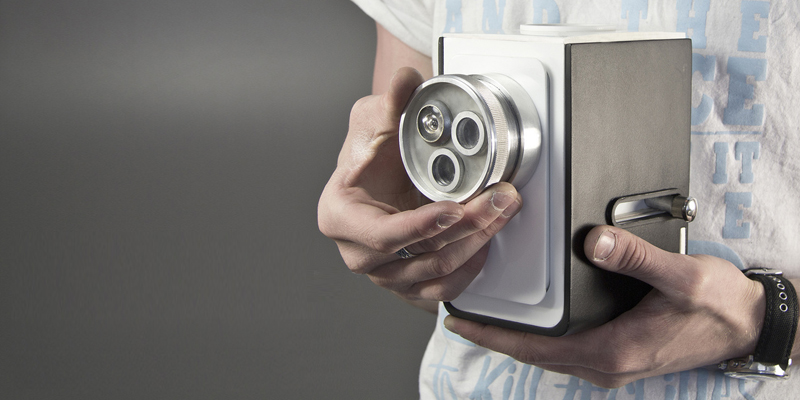

The Slow Photography camera has been designed as an alternate route in modern photography and requires the
photographer to consider traditional photographic principles such as framing, composition and lens selection. The Slow
Photography camera establishes that a mobile phone does not simply have to be a rudimentary point-and-shoot grade
camera and takes a literal stance on a mobile phone applications for photography such as 'Hipstamatic'.
To view the outcome of the Slow Photography camera, please visit www.dmccourt.com.